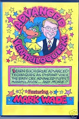

Distant Ventriloquism
5/27/2009
Question: Dear Sir, Myself, Abhijeet, a resident of India (Age 22). I'm an amature ventriloquism student, performing since last 4 years. I'm crazy about everything which is related to ventriloquism. While searching on Net on this subject I came across to your blog. I need some help in distance ventriloquism. I can't do distance ventriloquism. Will you please give me instructions on this? And how to use it on stage shows. I'll be thankful if you help me. I apologise for mistakes. Waiting for your response. Thank you. Regards.
* * * * * *
Answer: Hello, Abhijeet. I'm excited to hear of your enthusiasm for ventriloquism
Clinton
* * * * * *
Answer: Hello, Abhijeet. I'm excited to hear of your enthusiasm for ventriloquism
{kind=link}

! Your question concerning Distant Ventriloquism is one I receive often. I will give you a very brief answer here. Distant Ventriloquism is always an illusion. No one can physically "throw" or produce their voice from some point distant from themselves. It is always an illusion. The secret is to produce a voice that sounds as if it is coming from some distant point, and through acting, prepare the listener to expect a voice from that point. When these two things are combed and presented skillfully, the listener will actually be convinced they hear the voice coming from that distant point! For a more detailed explanation and DEMONSTRATION on this subject, I suggest Mark Wade's DVD "Advanced Ventriloquism". For sale hereClinton